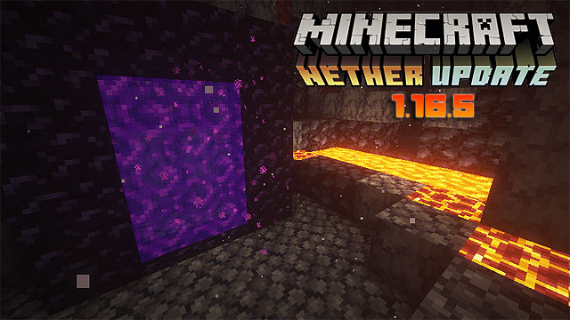
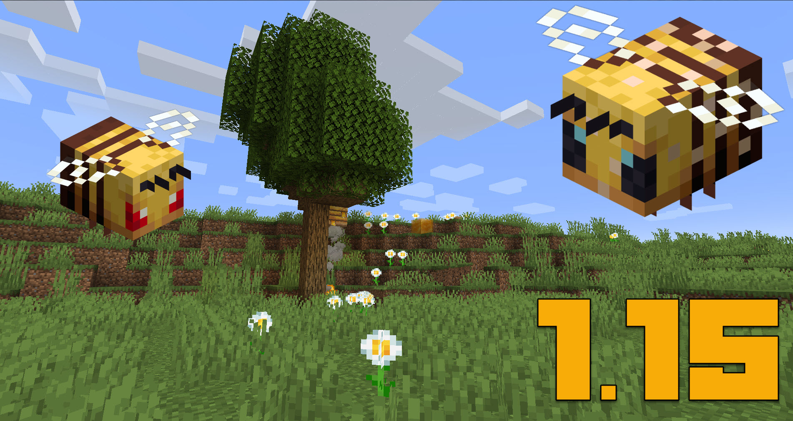
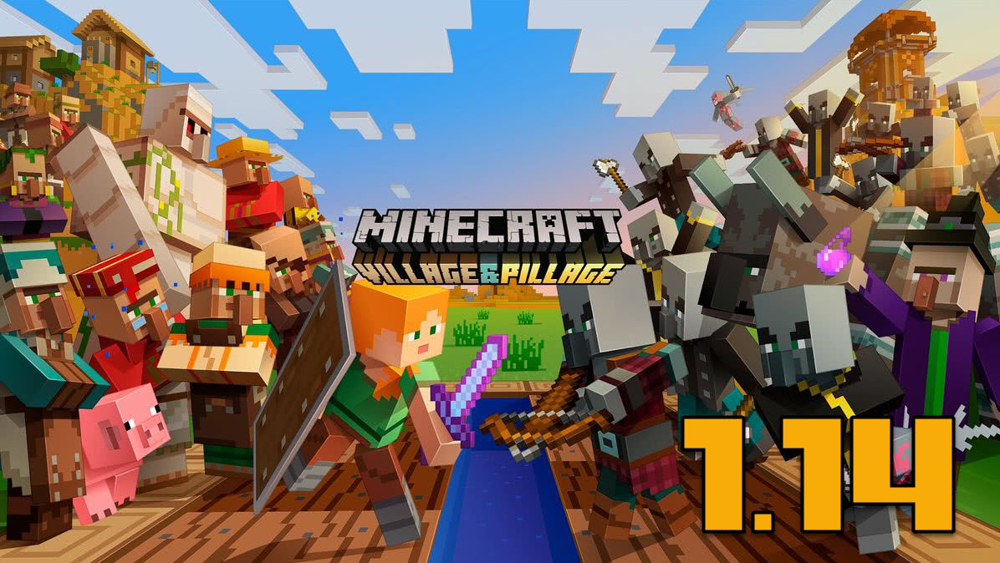
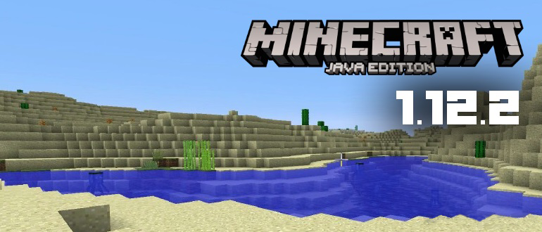

PMods - Minecraft 1.16.5
PMods - Minecraft 1.15.2
PMods - Minecraft 1.14.4
PMods - Minecraft 1.12.2
Приключенческая Сборка - 1.16.5
Список модов:
- 1. Backpacker - мод на рюкзаки из крольечей кожи, незерита еще есть два рюкзака они как аналоги для эндер щалкера и эндер сундука
- 2. Backpacked - мод на рюкзак
- 3. Chance Cubes - мод на рандомные предметы
- 4. Compact Ores - мод на компактную руду
- 5. Configured - улучшеное меню списка модов
- 6. Curios - новые дополнительные слоты
- 7. Cute Hermit Crabs - добавляет в игру крабов-отшельников
- 8. Enhanced Visuals - добавит в игру красивые визуальные эффекты
- 9. Goblin Traders - мод спавнит гоблина в ближайшем месте от игрока и обменивает полезные вещи
- 10. Just Enough Items - в инветаре появляется таблица с предметами и их рецептами
- 11. Performant - улучшает производительность игры
- 12. Relics - добавит реликвии или же артефакты которые доют определенные бонусы
- 13. Secret Rooms - мод добавит скрытые двери
- 14. Small Ships - небольшой мод который добавит корбали и улучшеные лодки
- 15. Spider 2.0 - мод который делает пауков намного мощнее, также они научются кидатся паутиной и замедлять вас
- 16. Undead Expansion - он добовляет так называему нежить и интересные магию и крафты
- 17. Core Mods - 6+ модов
Индустриальная Сборка 1.16.5
Список модов:
- 1. Big Brain - добавит изменения в искусственный интеллект мобов и добавит некоторые механики для них
- 2. Castle Dungeons - мод будет генерировать замки с лутом
- 3. Chunk Animator - изменит анимацию появления чанков
- 5. Configured - улучшеное меню списка модов
- 6. EyesInTheDarkness - глаза которые ночью будут пугать но и издовать странные звуки
- 7. Immersive Engineering - индустриальный мод на электричество но и на разные механизмы
- 8. Inventory Pets - мод на питомцов которые усиляют игрока разными бустами
- 9. Just Enough Items - в инветаре появляется таблица с предметами и их рецептами
- 10. Parry This! - улучшение боевой системы и добавление разных фишок
- 11. Performant - улучшает производительность игры
- 12. Powershot - с расстояния можно разрушать предметы и некоторые блоки с помщью лука или тризубца
- 13. Simple Planes - добовляет простые самолеты которые работают на угле
- 14. Simple Storage Network - мод позволяет соединить все сундуки и получить доступ ко всем предметам которые находятся внутри
- 15. Snail Mail - теперь черепаха может достовлять письма с больших расстояний =)
- 16. Start Ekit - который позволяет игрокам, впервые присоединившимся к миру, получать предметы, установленные в файле конфигурации
- 17. Tough As Nails - это мод на выживание, который добавляет различные функции, повышающие сложность игры, в том числе систему жажды и температуры.
- 18. Useless Sword - модификация добавляет разные мечи с эффектами и усилениями
- 19. Core Mods - 2+ модов